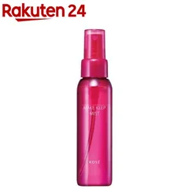
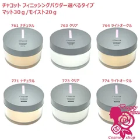
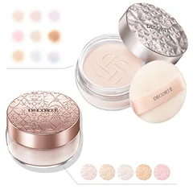
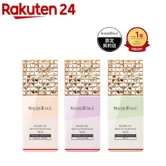
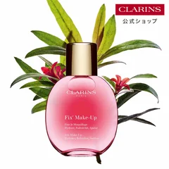
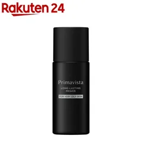

7位

コーセー
メイクキープミスト EX+
80mL
¥1,420税込・出典掲載価格
書き込みの声
- 「霧がすごく細かくてふわっと出る」と書いている人がいて、びちゃっと濡れた感じになりにくい
- メイクの最後に顔全体へひと吹き。パフに吹いてから顔を押さえる使い方をしている人も
気になる声ミストは粒が粗いと化粧を溶かすことがある。顔から離してひと吹きにとどめるという声
販売価格・容量・送料はリンク先でご確認ください
THE COSME EDIT / 2026.09.17
ガルちゃんの化粧崩れ・テカリ・毛穴落ち・化粧下地のトピ25個（書き込み4,279件）で名前が多く挙がったコスメを7つ、挙がった回数の順に。動画では、買う前にできる「朝の順番」「やめること」「保冷剤で冷やす」から先に話しています。使った人の声のまとめで、結果を保証するものではありません。赤みやヒリヒリが続く場合は皮膚科へ。
07 ITEMS 動画で紹介した商品
動画でいちばん時間を割いているのは商品ではなく、0円でできること（スキンケアのあと5分待つ／保冷剤で顔を冷やす／お粉はブラシでなくパフ／顔全部に同じものを塗らない）です。買う前にそちらを試してみてください。
価格は出典掲載時のものです。楽天の現在価格とは異なる場合があります。

コーセー
80mL
¥1,420税込・出典掲載価格
書き込みの声
気になる声ミストは粒が粗いと化粧を溶かすことがある。顔から離してひと吹きにとどめるという声
販売価格・容量・送料はリンク先でご確認ください

チャコット
マット20g／モイスト30g
¥1,400税込・出典掲載価格
書き込みの声
気になる声多く乗せると粉っぽくなる。パフに取ったら一度手の甲で落とすという声
販売価格・容量・送料はリンク先でご確認ください

コスメデコルテ
20g
¥3,597税込・出典掲載価格
書き込みの声
気になる声デパコスの値段。まず安いパウダーから試したい人には向かないという声
販売価格・容量・送料はリンク先でご確認ください

マキアージュ
25mL
¥2,970税込・出典掲載価格
書き込みの声
気になる声皮脂崩れ用なので、乾燥が強い人は頬だけ別の下地に分けているという声も
販売価格・容量・送料はリンク先でご確認ください

セザンヌ
30mL
¥660税込・出典掲載価格
書き込みの声
気になる声顔全体に塗るとカピカピになるという声。部分使い向け
販売価格・容量・送料はリンク先でご確認ください

クラランス
50mL
¥5,060税込・出典掲載価格
書き込みの声
気になる声デパコスの値段。毎日使いには高いという声
販売価格・容量・送料はリンク先でご確認ください

プリマヴィスタ
25mL
¥3,080税込・出典掲載価格
書き込みの声
気になる声「プリマの下地すら1時間しかもたない」という声もある。全顔に塗ると乾くという人も
販売価格・容量・送料はリンク先でご確認ください
SOURCE & NOTES
集計期間：2026年9月17日に確認（書き込みは2015年6月〜2026年7月）
価格は2026年9月17日に楽天の商品ページで確認した税込価格です。順位は書き込みで名前が挙がった回数の順で、良し悪しの順位ではありません。